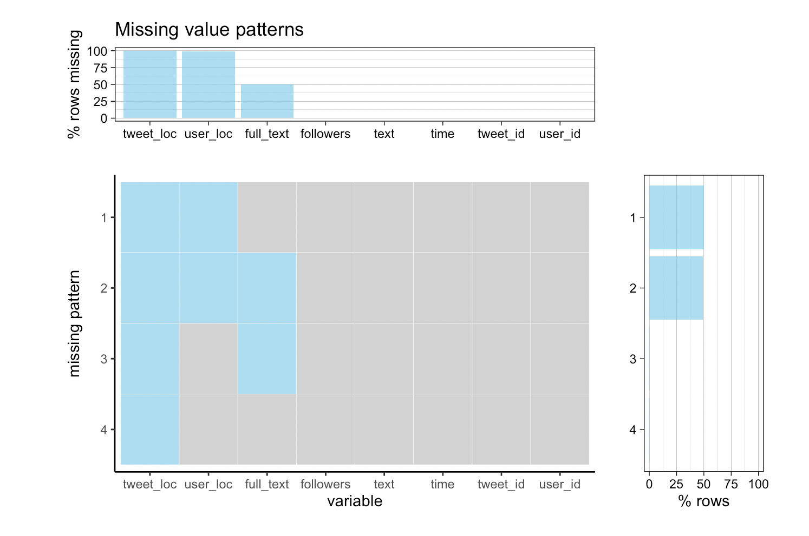

Chapter 4 Missing values
4.1 Twitter Dataset
By using Tweepy API, we monitored tweets data features related to keywords: “Elon Musk”, “Tesla”, “@elonmusk” for one month and decided to pick a continuous 7-day period for final evaluation.
Here we use the data set collected on 10/28/2021. A total of 65,695 values were missed in 3 columns which are tweet_loc, user_loc and full_text.

As shown in the table and the upset plot above, the tweet_loc column has the most missing values which only contains 4 valid values in total. By data description, it indicates that users seldom specify details about the location tagged in the Tweet. Another largely missing data column is user_loc with 683 non-null value. user_loc classify a Tweet by a specific place name such like ‘Georgia, USA’, and the missingness may be the similar reason as missingness of tweet_loc– people don’t tag their location when tweeting on topics about Elon Musk. Also, the missing values in column full_text shows that around half of the users tweet without text or making comments.